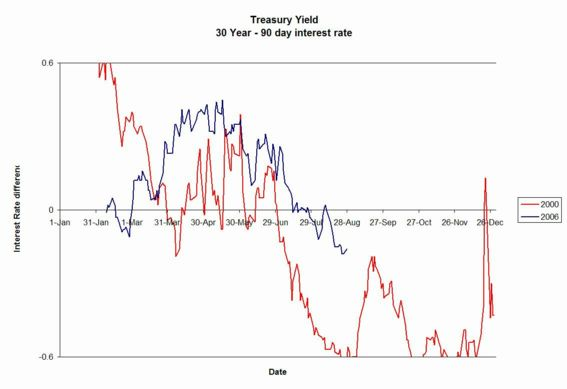

[Previous entry: ":-) :-) "Free screen cleaners" :-) :-)"] [Main Index] [Next entry: "The pettiness of the control state"]
08/28/2006 Archived Entry: "Hard Times Coming"
HARD TIMES ON THE WAY
Silver here. While my crystal ball doesn't work much better than anyone else's, there is one extraordinarily reliable indicator of a recession on the way. It gives about 6 months warning, and has been right all but one time since the cursed day when we were saddled with a central bank.
The predictor is called an inverted yield curve. Before your eyes glaze over, it's very simple.
Ask yourself this: if you were lending someone money, would you charge more interest on a loan to be repaid in 90 days, or a loan not due for 30 years? Without exception, rational people charge more for longer term loans. The reason is simple: nobody has a decent crystal ball. The future is uncertain, and uncertainty means more risk, hence a greater premium.
The biggest deadbeat debtor in the history of mankind is the US government. Normally, when people loan the government money by buying US Treasury bonds, they demand more interest for 30-year notes than for 90-day notes. When they don't, when interest rates for short-term loans are higher than for longer term loans, it is called an inverted yield curve. To make a long story short, the market is signaling, via the buy/not buy decisions of millions of individuals who buy government bonds or influence those who do, that there is something seriously wrong.
The details as to why this works as a predictor don't matter that much. When there is an inverted yield curve, and it lasts for a month or more, a recession follows in 6 months or so. In the chart below, I've simply subtracted the yields of 90-day notes from those of 30-year notes. You can see the raw data at a US Treasury website.

I've plotted both the 2006 data as well as data from 2000. When the line goes below zero, yields are inverted. The last recession started in early 2001, and pretty much wiped out tech stocks and the dot-com bubble. Those stocks are still trading well below their peak. This year, the yield curve inverted the last day of July, and has stayed that way all but 3 days in August.
This recession will almost certainly wipe out homeowners with ARM loans, who will take the broader stock and financial markets along with them. Look out below!
Posted by Silver @ 08:19 PM CST
Link